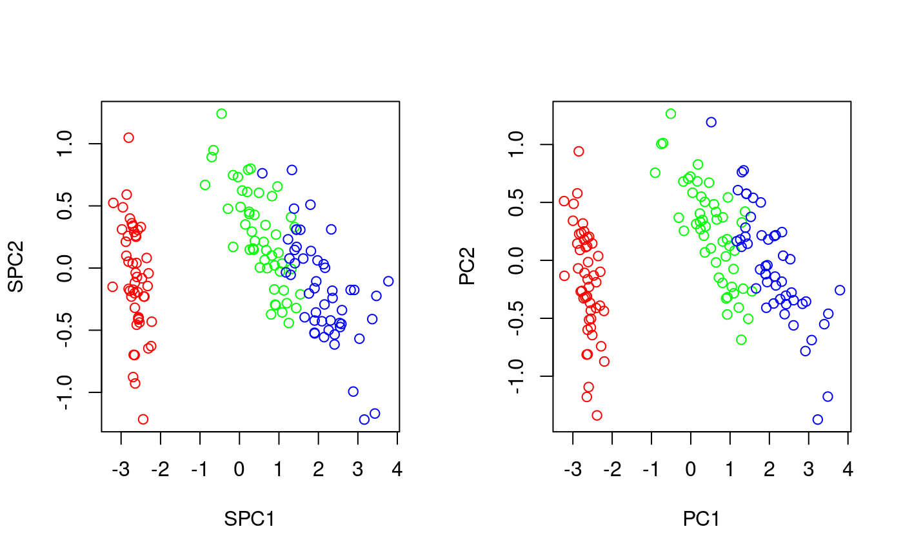

txSpca.RdtxSpca transforms data using supervised principal component
analysis.
TODO
txSpca(x, y = diag(1, nrow(x)), k = 3, ...)
| x | a data matrix (features in columns, samples in rows) |
|---|---|
| y | target classification of x (logical, numeric, or a factor), or a kernel matrix of the target. If not specified, it defaults to identity matrix, in which case SPCA becomes equivalent to classical PCA (as the matrix being decomposed equals the covariance matrix of 'x'. (Strictly speaking, when centering is in use, SPCA becomes the classical PCA. Otherwise, SPCA yields components similar to those yielded by PCA over centered data, but shifted.) |
| k | number of dimensions of the result, defaults to 3 in order to be usable in 'plot3dProj' |
| ... | additional arguments to 'spca' |
Transform function taking two arguments: a data matrix y
to transform, and a logical center determining whether
the data are to be centered, or not. The parameters of the
transform get returned in the params attribute
(see spca).
In addition, there is the varExplained function added to
the parameters, which takes k, the number of components,
and returns the contribution of individual dimensions to the top
k components.
# comparison of PCA vs. SPCA # TODO opar<-par(mfrow=c(1,2)) plot(txSpca(iris[,1:4],iris$Species)(iris[,1:4])[,1:2],col=c('red','green','blue')[as.numeric(iris$Species)]) plot(txPca(iris[,1:4])(iris[,1:4])[,1:2],col=c('red','green','blue')[as.numeric(iris$Species)])par(opar) if (interactive() && require(rgl)) { # a 3D example x<-iris[,1:4] y<-iris$Species plot3dProj(x, cls=y, tx=txSpca(x,y)) }